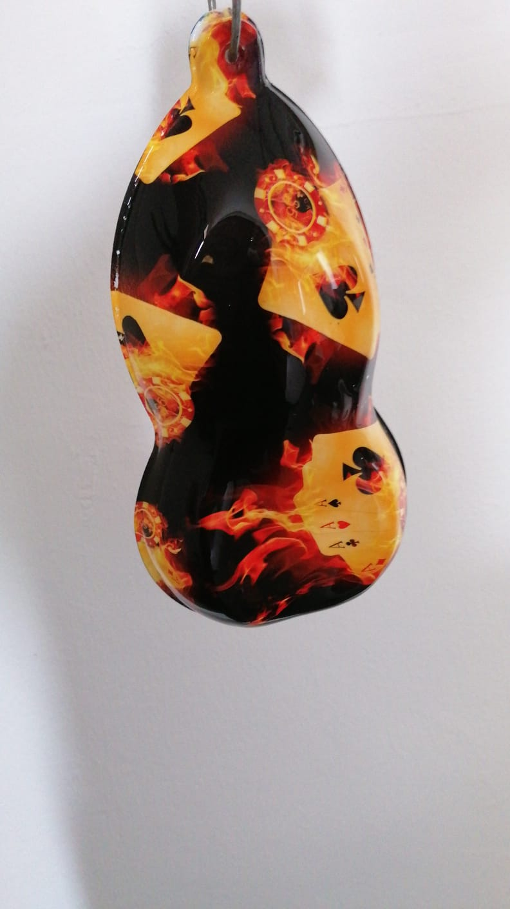

<!-- Slideshow container -->
<div class="slideshow-container bg-container">
    <!-- Full-width images with number and caption text -->
    <div class="mySlides fade">
     
    </div>
    
    <div class="mySlides fade">
     
    </div>

    <!--  -->

    <div class="mySlides fade">
     
    </div>
    
    <!-- Next and previous buttons -->
    <a class="prev" onclick="plusSlides(-1)">&#10094;</a>
    <a class="next" onclick="plusSlides(1)">&#10095;</a>
     </div>
     <br>
    
     <!-- The dots/circles -->
     <div style="text-align:center">
    <span class="dot" onclick="currentSlide(1)"></span>
    <span class="dot" onclick="currentSlide(2)"></span>
    <span class="dot" onclick="currentSlide(3)"></span>
     </div>